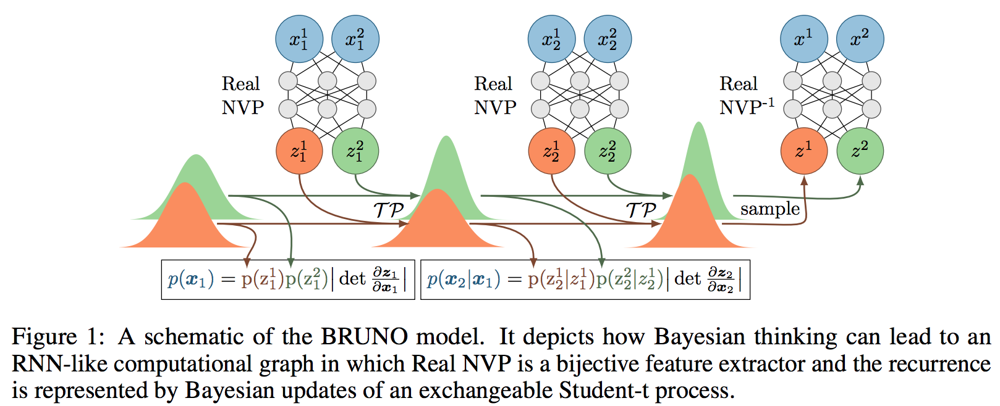
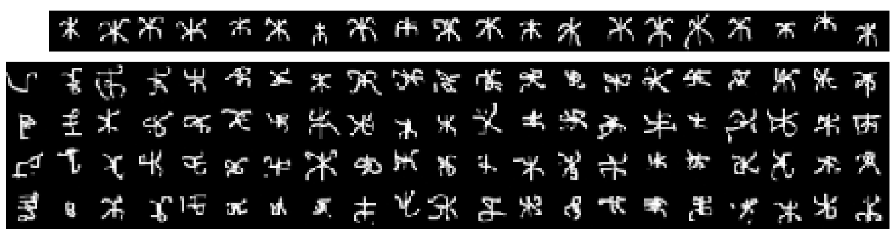
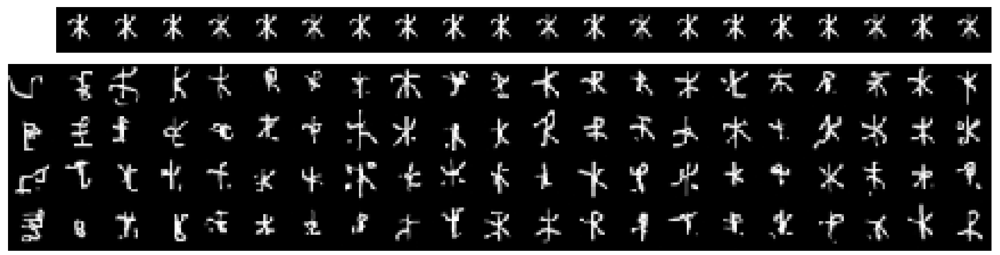
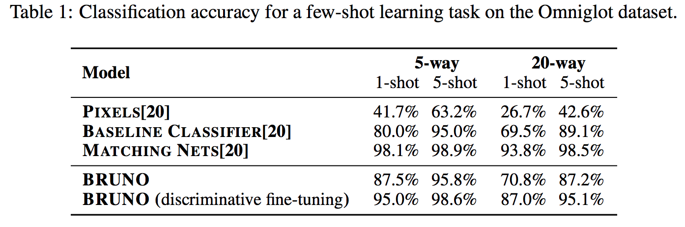
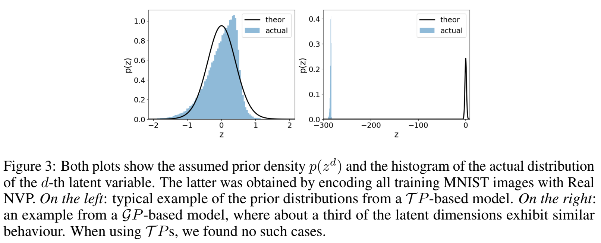

BRUNO: A Deep Recurrent Model for Exchangeable Data
Мотивация
Хардкорные байесиане характеризуются тем, что никакие точечные оценки им не интересны, а интересны распределения целиком. При этом байесовские статистики интересуются апостериорными распределениями на неизвестные латентные величины \(p(\theta|x)\), а вот байесовские машинлёрнеры интересуются предиктивными моделями, поэтому их святой грааль – это т.н. posterior predictive \(p(x_n|x_{<n})\).
В этой статье мы зададимся целью построить и обучить нейробайесовскую модель с tractable posterior predictive.
Введение
Вообще говоря, для Байесианина предположение независимости и одинаковой распределённости означает невозможность хоть что-либо выучить из данных. В самом деле, если \(x_1\) и \(x_2\) независимы, то что один может сказать о другом? О каком обучении вообще идёт речь? На самом деле у нас истинно независимых данных никогда нет, и даже наши обучающие выборки независимы лишь в предположении известности генерирующего их распределения.
Если же распределение неизвестно, то можно ослабить требования независимости, заменив его на свойство перестановочности: если применение произвольной перестановки не меняет вероятности увидеть такие данные, т.е. \(p(x_1, \dots, x_n, \dots) = p(x_{\pi(1)}, \dots, x_{\pi(n)}, \dots)\) для любой перестановки \(\pi\).
Для перестановочных распределений справедлива т.н. теорема де Финетти: если \(p(x_1, \dots, x_n)\) перестановочно, то существует \(\theta\) т.ч. все \(x_i\) условно независимы при условии \(\theta\) (то самое распределение из первого абзаца этой секции).
\[ p(x_1, \dots, x_n) = \int \prod_{i=1}^n p(x_i | \theta) p(\theta) d\theta \]
Понятно, что в такой модели posterior predictive принимает всем нам привычную форму
\[ p(x_n | x_{<n}) = \int p(x_n, \theta | x_{<n}) d\theta = \int p(x_n | \theta) p(\theta | x_{<n}) d\theta \]
Интеграл этот посчитать (или хорошо приблизить) аналитически можно лишь в редких случаях (линейная и логистическая регрессии, например), но сегодня мы зададимся весьма амбициозной целью построить нейробайесовскую модель, которая бы моделировала \(p(x_n | x_{<n})\) напрямую!
Описание модели
Процесс Стьюдента
Это как гауссовский процесс, только стьюдентовский.
Многомерное распределение Стьюдента \(\text{MVT}_n(\nu, \mu, K)\), где \(\nu \ge 2\) – число степеней свободы 1, \(\mu \in \mathbb{R}^n\) – среднее и \(K\) – положительно определённая матрица ковариации, имеет плотность \[ p(z) = \frac{\Gamma(\tfrac{\nu + n}{2})}{\sqrt{\text{det}((\nu-2) \pi K)} \Gamma\left(\tfrac{\nu}{2}\right)} \left(1 + \frac{(z - \mu)^T K^{-1} (z - \mu)}{\nu - 2} \right)^{-\frac{\nu + n}{2}} \]
По аналогии с нормальным распределением, если совместное распределение вектора \(z\) имеет многомерное распределение Стьюдента, то и при его разбиении на 2 подвектора \(z = (z_a, z_b)\) условное распределение \(p(z_a | z_b)\) будет многомерным Стьюдентовским, а именно если
\[ \begin{bmatrix} z_a \\ z_b \end{bmatrix} \sim \text{MVT}\left(\nu, \begin{bmatrix} \mu_a \\ \mu_b \end{bmatrix}, \begin{bmatrix} K_{aa} & K_{ab} \\ K_{ba} & K_{bb} \end{bmatrix} \right) \]
то \(z_b | z_a \sim \text{MVT}\left(\nu + n_a, \tilde{\mu}_b, \frac{\nu + \beta_a - 2}{\nu + n_a - 2} \tilde{K}_{bb} \right)\), где
\[ \begin{align} \tilde\mu_b &= K_{ba} K_{aa}^{-1} (z_a - \mu_a) + \mu_b \\ \beta_a &= (z_a - \mu_a)^T K_{aa}^{-1} (z_a - \mu_a) \\ \tilde{K}_{bb} &= K_{bb} - K_{ba} K_{aa}^{-1} K_{ab} \end{align} \]
Как и в случае с Гауссовским Процессом, здесь нужно обращать матрицу ковариации, что в общем случае стоит \(O(n^3)\).
У Стьюдентовского процесса есть 2 свойства:
- Количество степеней свободы \(\nu\) контроллирует хвосты распределения. Чем оно больше, тем легче становятся хвосты и тем ближе распределение Стьюдента к распределению Гаусса. Напротив, при уменьшении \(\tau\) хвосты становятся тяжелее и распределение Коши, например, является частным случаем распределения Стьюдента.
- Предиктивная дисперсия (ковариация для \(z_b|z_a\)) домножается на \(\tfrac{\nu + \beta_a - 2}{\nu + n_a - 2}\) где \(\beta_a\), по-сути, измеряет эффективное отклонение наблюдения \(z_a\) от своего мат. ожидания – т.е. чем сильнее семплы отклоняются от мат. ожидания, тем больше будет предиктивная дисперсия, чем в гауссовском случае 2
Real NVP
Real NVP – это специальный класс моделей биективных функций на нейросетях с эффективно вычисляемым якобианом. А именно, эти модели состоят из т.н. связывающих слоёв, в которых часть входов копируется как есть, а оставшаяся часть аффинно 3 преобразуется
\[ \begin{align} y^{1:d} &= x^{1:d} \\ y^{d+1:D} &= x^{d+1:D} \circ \exp(s(x^{1:d})) + t(x^{1:d}) \end{align} \]
Где \(\circ\) – поточечное умножение, \(s\) – лог-масштабирующий коэффициент, t – коэффциент сдвига, оба могут быть произвольно сложными функциями (любыми нейросетями). Нетрудно убедиться, что
- Такой слой довольно легко обратить – просто взять \(y^{1:d}\), прогнать через нейросети \(s\) и \(t\), получить коэффициенты аффинного преобразования и применить обратное к нему к \(y^{d+1:D}\).
- Матрица Якоби у такого слоя имеет очень приятную нижнетреугольную структуру, поэтому её определитель равен произведению диагональных элементов и, как следствие, легко (с линейной сложностью) вычисляется.
Настекав таких слоёв, и меняя разбиение нейронов на копируемые-преобразуемые, мы можем выражать какие-то сложные нелинейные нейросетевые архитектуры.
BRUNO
Теперь совместим ежа с ужом, а именно закодируем наши входы каким-то RealNVP и предположим, что они совместно распределены по Стьюденту. Если входы \(x\) (обучающие примеры) совместно перестановочны, то и выходы RealNVP \(z\) (скрытые представления) будут совместно перестановочны.
Мы сделаем 2 модельных предположения о распределении представлений \(z\)
- Все компоненты \(z\) независимы: \(p(z) = \prod_{d=1}^D p(z_d)\)
- Каждая компонента совместно по всем наблюдениям распределена по Стьюденту: \(z_1^d, \dots, z_n^d \sim \text{MVT}(\nu^d, \mu^d \mathbf{1}_n, K^d)\) где в \(K\) на главной диагонали стоят \(v^d\), а вне – \(\rho^d\) 4 т.ч. \(0 \le \rho^d < v^d\), а \(\nu^d, \mu^d, v^d, \rho^d\) – настраиваемые скаляры.
Теперь мы можем для каждой координаты посчитать posterior predictive \(p(z_{n+1} | z_{\le n})\) с использованием свойства условных стьюдентов. Мы уже знаем, что это будет другой Стьюдент, параметры его будут выглядеть так
\[ \nu_{n+1} = \nu_n + 1, \quad \mu_{n+1} = (1-d_n) \mu_n + d_n z_n, \quad v_{n+1} = (1-d_n) v_n + d_n (v - p), \quad \]
Где \(d_n = \tfrac{\rho}{\nu + \rho(n-1)}\), а \(\rho_{n+1}\) нам считать не нужно, ибо \(z_{n+1}\) есть скаляр. Что нужно, тем не менее считать, так это \(\beta_{n+1}\) – член, понижающий / повышающий дисперсию. Формулу можно найти в статье. Из всех этих формул видно, что пересчёт параметров распределения занимает линейное время и полностью дифференцируем, а значит, мы можем эффективно обучать такие архитектуры.
Итого, мы построили перестановочный процесс Стьюдента в пространстве представлений \(z\), добавить ещё обратимый RealNVP и вуаля – у нас на руках перестановочный процесс в пространстве наблюдений \(x\). Можно делать что угодно – взять \(x\)’ы, перейти к соответствующим \(z\), засемплировать следующий, восстановить соответсвующий \(x\). Можно найти маргинальное распределение на \(x\), домножив распределение \(z\) на якобиан.

Обучается всё тоже просто, “teacher forcing”ом как в RNN-ках. Параметров тоже не очень много: столько, сколько нужно для RealNVP, да по 4 на каждую компоненту входа.
Эксперименты
Few-shot генеративные модели
Для экспериментов авторы подавали картинки omniglot’а в модель и просили предсказать следующую картинку. Важно заметить, что во время обучения модель не видела картинки этого класса, ей их подали только на тесте для генерации. На картинке ниже каждый столбец – это 4 семпла после того, как мы пронаблюдали верхний ряд до соответствующего столбца (слева направо). Кажется, со временем модель адаптируется генерировать что-то Ж-образное.

А вот теперь мы будем постоянно подавать одну и ту же картинку – posterior predictive должен начать вырождаться в неё, и правда, вариативность семплов уменьшается. Как я понял, происходит это в том числе благодаря Процессу Стьюдента! Та самая магическая \(\beta_a\) становится сильно меньше \(n_a\), что приводит к занижению дисперсии.

Few-shot классификация
Давайте теперь возьмём нашу генеративную модель и попробуем ею классифицировать входы. Для этого просто загрузим примеры соответствующего класса в историю модели и посмотрим на правдоподобие нашего входа при такой истории. Какой класс приведёт к максимальному – тот и выдадим. (k-way – это на k классов)

Авторы побили бейзлайн, но проиграли т.н. matching nets, которые, как утверждается, учатся в дискриминативном режиме и вообще обучаются в том же режиме, в котором используются, так что не страшно.
А всё-таки что если GP?
Наконец, авторы провели эксперименты с моделью, заменив \(\mathcal{TP}\) на \(\mathcal{GP}\), и получилось, что априорные семплы вообще бесмысленны. Связанно это с тем, что \(\mathcal{GP}\) вообще не любит выбросы, а RealNVP иногда (примерно в трети случаев!) выдавало фичи очень сильно отклоняющиеся от предполагаемого априорного \(p(z^d)\) (см. картинку ниже), дальнейший анализ показал, что в этих случаях модель выучивала \(\rho \approx v\), что приводило к практически детерминированной корреляции между соседними (по “времени”) z’ами и как следствие модель забывала априорные уже после одного шага 5. С другой стороны, успех \(\mathcal{TP}\) авторы объясняют взглядом на него как на \(\mathcal{GP}\) с обратным Уишартом в качестве априорного на ковариацию, исправляющим этот баг. Опять же, \(\beta_a\) позволяет модели адаптироваться к пере-дисперсии и недо-дисперсии относительно Гауссовского случая.

Заключение
Очень интересная идея. Результаты, конечно, не впечатляют, но для начала сойдёт. Возможно, проблемы статьи скорее проистекают из выбора биективной сети в качестве энкодера-декодера: необходимость уметь точно восстановить вход позволяет лишь немного распутать существующие признаки и не даёт выучить абстрактные (потому что забывать ничего нельзя, а размерность увеличивать нельзя).
На распределение Стьюдента и его чудесное свойство по “подстройке” под пере/недо-дисперсию точно нужно обратить большее внимание.
Вообще-то, многомерное распределение Стьюдента можно задать и для \(\nu < 2\), в Википедии, например, приведена альтернативная параметризация этого распределения, допускающая такие степени свободы. Правда, хвосты станут настолько тяжёлыми, что дисперсия и другие вторые моменты перестанут существовать.↩
Не спрашивайте меня, при чём тут Гауссовское распределение, если всё распределено по Стьюденту.↩
Тут можно использовать любую эффективно обратимую функцию, в частности я не понимаю, почему после аффинного преобразования не используется какой-нибудь гиперболический тангенс, например.↩
Матрица ковариации имеет такую простую структуру ради свойства перестановочности. Кажется, ничего сложнее сделать нельзя.↩
Возможно, это можно было бы исправить, обучая модель в априорном режиме (с пустой историей для обуславливания).↩